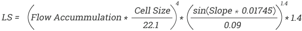
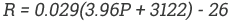
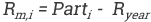
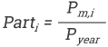

Slope Length and Slope Steepness (LS) Factor
The LS factor is one of the most important determinants of soil erosion that affects the total sediment detached, transported and deposited on a site. It is a product of both the slope length (flow accumulation) and steepness (slope) derived from a 90m digital elevation model, calculated to form the topographic factor.
To compute the LS factor in GIS, the USPED equation as proposed by Moore and Burch (1986) was used.

The product of the USPED equation is the LS factor which after reclassification gives a five point scale soil erosion risk map with values ranging from 1 (very low erosion risk) to 5 (very high erosion risk).
Rainfall Erosivity (R) Factor
This is the erosive force and intensity of rainfall in a normal year (Goldman et al. 1986). It influences soil erosion by kinetic energy possessed by each raindrop causing detachment and rainfall intensity deposited over a specific time interval.
Since this study was based in in East Africa, the standard erosivity index used to derive the R factor was proposed by Moore R. (1979, 147-156) while carrying erosivity studies in Kenya, Uganda and Tanzania. The equation is as follows:

Where R is rainfall erosivity (J m-2) and P is the mean annual rainfall of the area (mm).
To compute seasonal rainfall erosivity using the above equation, monthly rainfall erosivity has to be determined first by multiplying monthly fraction of rainfall distribution in year by annual rainfall erosivity.

Where Rm,i is the monthly R factor, Ryear is the annual R factor while Parti is the monthly fraction of rainfall distribution in year. Parti is computed using the following equation:

Pm,i is the amount of precipitation for the month i and Pyear is the annual rainfall amount
It is then that rainfall erosivity products in each month of the season are added together to get seasonal rainfall erosivity layer. Finally the layer is standardized using the natural breaks classification system by assigning it index values ranging between 1 (very low erosion risk) to 5 (very high erosion risk).
In this study monthly gridded TRMM 3B43 precipitation datasets for the short and long rain seasons recorded from August 2009 to July 2010 were used to compute the annual and seasonal R factor.
Soil Erodibility (K) Factor
Soil erodibility refers to the general susceptibility of the soil to erosion (Commission of the European Communities 1994, 38). It embodies the average long-term soil and soil profile ability to absorb rainfall or resist detachment and transport from surface shear and raindrop impact.
There are a number of basic soil attributes that play quite a huge role in determining the rate of erodibilty and this includes organic matter content, soil texture, soil water storage capacity and soil depth. All these soil characteristics were deduced from the 0.5 x 0.5 degree resolution WISE Harmonized World Soil Database (HWSD).
It was also necessary to reclassify the soil erodibility map into five classes. The classes ranged from very low soil erosion risk to very high soil erosion risk represented by cell values 1 to 5 respectively.
Vegetation Cover
Soil erosion potential rate is increased if the land surface has very little vegetative cover. Plant and residue cover acts to reduce the impact of erosion by; protecting the soil from rain drops, reducing surface runoff, increasing water infiltration rate, holding the soil together with their root systems and lastly by contributing organic matter content to the soil consequently gluing soil particles together.
The efficiency of vegetation cover in reducing soil erosion varies from one type to the other. Plant and residue that nearly covers the entire land surface with good root system would be scored highly in reducing erosion than say areas with little or no vegetation cover at all. Forests and permanent grass for example fall in this class since there root system grows wide and deep into the soil holding it together while their vegetative matter protects the soil from the raindrops.
Presence and absence of vegetation cover on a land surface is a critical component of slope erosion modeling. Hence this study focused on combining five generalized land use/cover types through addition with maximum value composite (MVC) of seasonal vegetation indices (NDVI) to form a vegetation cover layer. The vegetation cover just like all the other map layers mentioned before was reclassified into five classes with index values of 1 (very low erosion risk) to 5 (very high erosion risk)
In this study, 30m GlobeLand30 image captured in 2010 and ten-day MVC synthesis of SPOT VGT-S10 products captured from October 2009 to May 2010 were used.
Population Distribution
Denudation and compaction of soil through overgrazing, clearance of fragile zones such as forest, grasslands and wetlands, and intensive cropping without application of organic matter and nutrients are some of the human activities that contribute to soil erosion (Roose 1996).
To create a livestock population layer, cattle, goats, sheep, pigs, chickens and ducks population distribution layers were added together. Resampling of human and livestock population distribution layers to an approximate cell size of 25km X 25km followed. This was necessary since an overlay of these two datasets were supposed to be multiplied eventually with a coarse layer that had an estimated cell size of 25km X 25km.
Finally the total population distribution map was computed by adding together resampled human and livestock population distribution layers. Reclassification into five categories was then performed on the map resulting into a layer showing susceptibility of a given pixel to erosion starting from very low susceptibility to very high susceptibility.